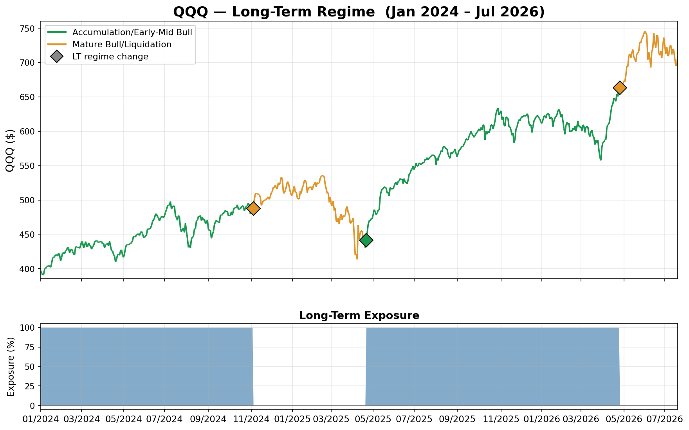
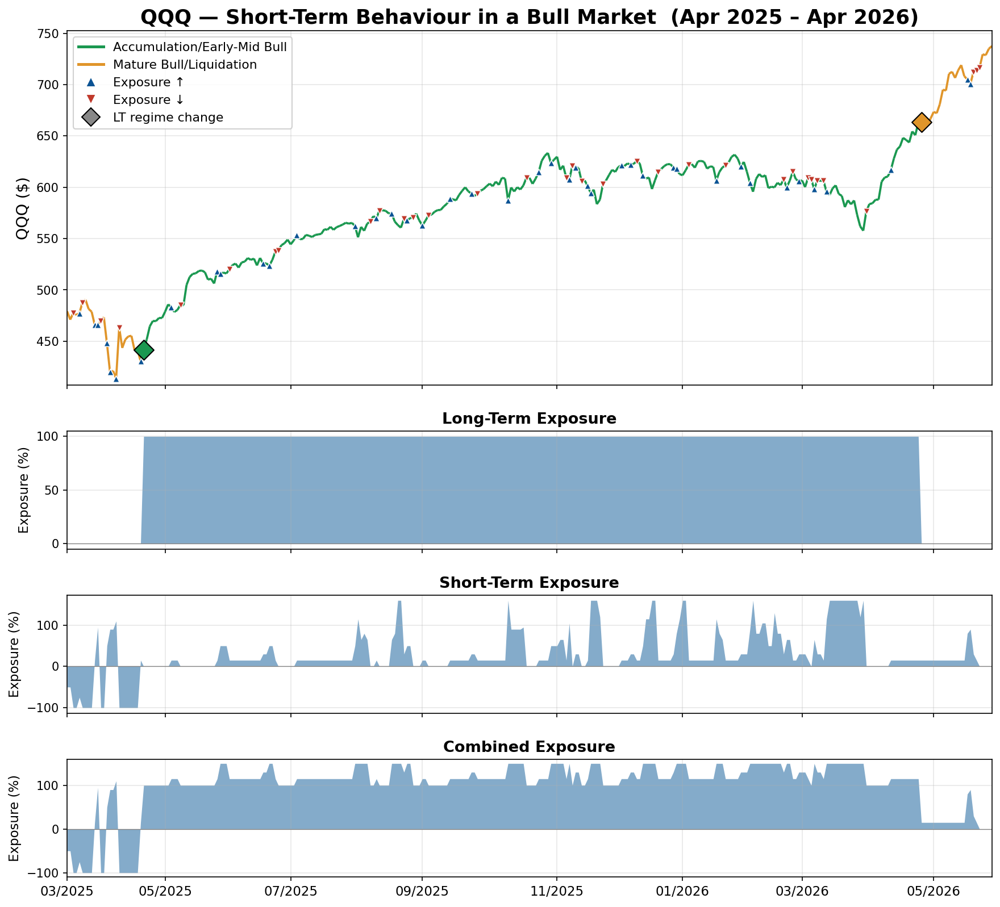
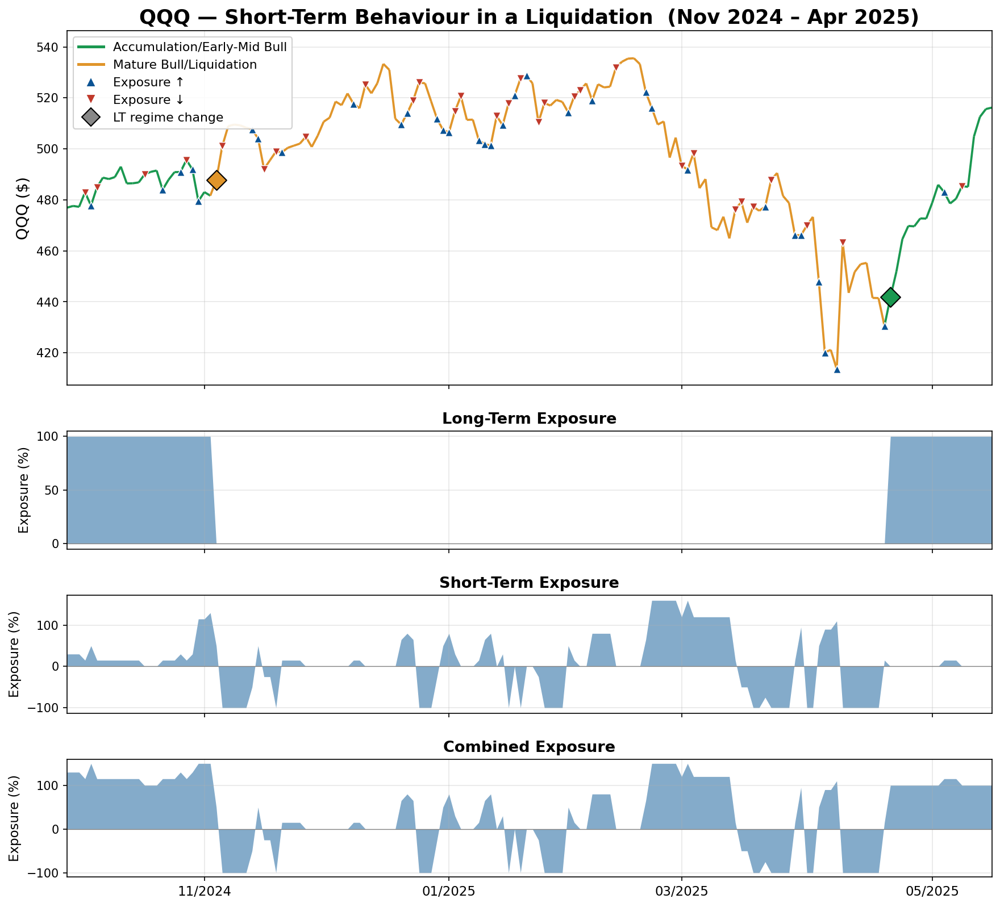
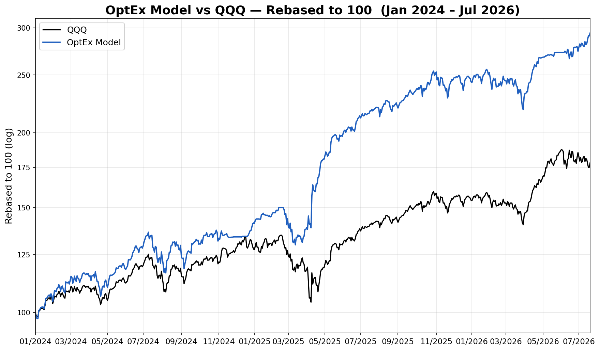

OptEx reads where the market sits in that cycle, then trades the playbook that fits it — holding a core position when conditions support it, standing down when they don't, and trading the swings around it either way.
Markets cycle between periods when buyers absorb supply easily and periods when forced selling overwhelms them. Those two states behave differently in almost every measurable way — how volatility behaves, whether moves persist or reverse, how far a sell-off runs before it finds a bid. A strategy that works beautifully in one is often the exact wrong strategy in the other.
OptEx separates the problem into two engines that run on different clocks. A long-term engine decides which regime we are in and whether to hold a core long position at all. A short-term engine trades the swings inside that regime, over horizons of a few days to a few weeks. The two are combined into a single net exposure, which is what actually gets traded.
A weight-of-evidence framework that reads market breadth, volatility conditions, sentiment extremes and price behaviour. No single indicator decides anything — the model looks for clusters of independent evidence pointing the same way.
A library of distinct signals, each with a long history of firing near turning points, and each operating on its own horizon — from a single session out to several weeks.
Position size is a function of how many independent signals agree at once. One signal is noise. Several aligning across different timeframes is the setup we size into.
The evidence required to take a position rises with volatility. The same signal that justifies full size in a calm market earns a smaller position — or none — in a stressed one.
The exit is deliberately asymmetric to the entry. Conviction is built patiently on the way in, as evidence accumulates. On the way out, any meaningful strength is taken as the cue to reduce — regardless of where the position sits on profit and loss. The model is harvesting a dislocation that decays; the first sign it is paying out is the signal to bank it, not to press.
The first job is classification. Green marks the phases the model identifies as accumulation and early-to-mid bull — conditions where buyers are absorbing supply and a core long position is justified. Amber marks mature bull and liquidation phases, where the model steps out of that core position.

Two features matter here. The regime call is deliberately slow and it does not try to catch tops and bottoms — it is a statement about conditions, not a price forecast. And when the model steps down, it steps fully down: the core position is binary. Everything else that happens in an amber period is the short-term engine at work.
Within a constructive regime, the short-term engine has one job: buy weakness. Sell-offs in these conditions tend to be shallow, orderly and short-lived, because the underlying bid is intact. The model scales in as evidence of exhaustion accumulates, peaks its exposure near the low, then reduces into the first sign of strength and waits for the next opportunity.

The short-term panel shows the rhythm clearly: long stretches at a low base weight punctuated by sharp increases where several signals fired together. Those spikes are the confluence events — the days the model judged that forced selling had run its course.
A stressed regime demands a different playbook, and this is where the two engines separate most visibly. The core long is off. Dips can extend rather than reverse, so the evidence bar for buying rises and position sizes come down. Crucially, the model can also position short — rallies that show no genuine buying pressure become opportunities rather than something to wait out.

This is the structural reason a regime framework matters. In high-volatility conditions moves become violent in both directions, not just downward — which makes a sharp, unsupported rally as tradeable as a capitulation low. The model does not need the market to go up to make money; it needs to know which regime it is in.
Combining the two engines produces a return profile that participates in bull markets while materially reducing the damage taken in liquidations — the periods where a long-only holder gives back the most.

Figures cover January 2024 to July 2026 and are calculated on daily returns with a zero risk-free rate. Returns are exposure-scaled, with combined exposure ranging from −100% to +150%; headline return and volatility reflect that gearing.